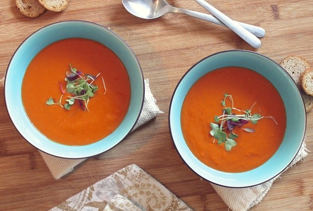

Soup
Beethoven once said Only the pure of heart can make a good soup. Well, here's my attempt at doing just that!
- Step 1
- Step 2
- Step 3
- Step 4
Beethoven once said Only the pure of heart can make a good soup. Well, here's my attempt at doing just that!

Who can resist a fresh salad ! Here's one of my favorites.

Pizza, the king of comfort foods. Try this simple, taste sensation.